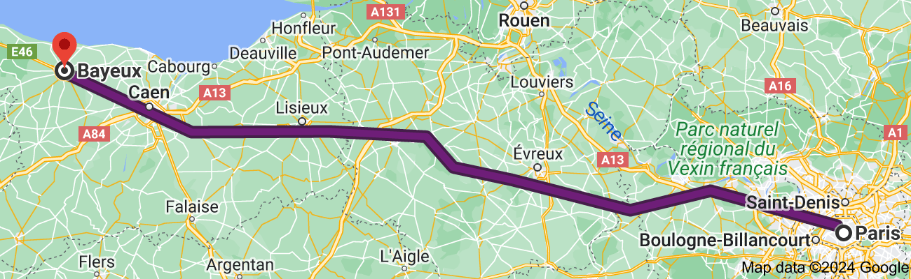

VALENTINA
&
THOMAS

14h15* - 15h00, 14 Sept. 2024
Hôtel du Doyen - Bayeux
*La ceremonia comenzará a las 14:30 en punto, por favor lleguen a las 14:15 para asegurar un inicio puntual.
*La cérémonie commencera à 14h30, veuillez arriver à 14h15 pour garantir un début ponctuel.
A partir de 16h00, 14 Sept.2024
Ferme Manoir de Villiers-Le-Sec
11h30 - 14h00, 15 Sept. 2024
Ferme Manoir de Villiers-Le-Sec
Para llegar a Bayeux desde París, pueden tomar el tren desde la Gare Saint-Lazare hasta Bayeux. El viaje dura 2 horas y 12 minutos.
Pour aller à Bayeux depuis Paris, vous pouvez prendre le train depuis la Gare Saint-Lazare jusqu'à Bayeux. Le trajet dure 2 heures et 12 minutes.
El Hôtel du Doyen se encuentra en el centro de Bayeux, en la Rue Léonard Lambert Leforestier.
L'Hôtel du Doyen est situé au centre-ville de Bayeux, rue Léonard Lambert Leforestier.
La Ferme Manoir de Villiers-Le-Sec está ubicada en 2 rue de l'Eglise, Villiers-le-Sec, 14480 Creully. Para llegar allí desde Bayeux, deberán conducir o tomar un taxi. El viaje desde el centro de Bayeux dura aproximadamente 15 minutos en auto, y el lugar cuenta con estacionamiento. Nosotros los asistiremos con el transporte para el retorno a Bayeux al término de la fiesta.
La Ferme Manoir de Villiers-Le-Sec est située au 2 rue de l'Eglise, Villiers-le-Sec, 14480 Creully. Pour y arriver depuis Bayeux, vous devrez prendre une voiture ou un taxi. Le trajet depuis le centre-ville de Bayeux dure environ 15 minutes en voiture. Un parking est disponible sur place. Nous vous assisterons avec le transport de retour à Bayeux à la fin de la fête.
Taxi:
+33 (0)2 31 92 92 40
Arriendo de autos - Location de voiture:
Si es su primera vez en Bayeux o tienen algo de tiempo extra...
Si c'est votre première fois à Bayeux ou si vous avez un peu de temps libre...
Visitar la tapiseria de Bayeux: La tapiseria de Bayeux es una obra maestra del arte románico. Mide 70m de largo y 50cm de alto, e ilustra la conquista de Inglaterra por Guillermo en el año 1066. Esta visión única de la vida medieval en Europa está inscrita en el registro Memoria del Mundo de la UNESCO.
Visiter la tapisserie de Bayeux: La tapisserie de Bayeux est une œuvre d'art romane brodée. Mesurant 70m de long et 50cm de haut, elle illustre la conquête de l'Angleterre par Guillaume en 1066. Cette vision unique de la vie médiévale en Europe est inscrite au registre Mémoire du monde de l'UNESCO.
Visitar las playas del Desembarco de Normandía: Caminar por la playa y hacer una parada para comer ostras y mariscos en un restaurante con vistas al mar. Una buena opción es Arromanches-les-Bains, a solo 11 km de Bayeux.
Visiter les plages du Débarquement de Normandie: Se promener sur la plage et faire une pause pour manger des huîtres et des fruits de mer dans un restaurant avec vue sur la mer. Une bonne option est Arromanches-les-Bains, à seulement 11 km de Bayeux.
El Mont-Saint-Michel: Si tienen un día extra, les recomendamos visitar Mont-Saint-Michel, una isla rocosa situada en una vasta bahía con una espectacular abadía medieval. Está ubicado a 112 km de Bayeux. Conduciendo toma 1h y 30 min pero también varias compañías hacen tours por el día saliendo desde Bayeux.
Le Mont-Saint-Michel: Si vous avez un jour supplémentaire, nous vous recommandons de visiter le Mont-Saint-Michel, une île rocheuse située dans une vaste baie avec une abbaye médiévale spectaculaire. Il est situé à 112 km de Bayeux. En voiture, cela prend 1h30 mais plusieurs compagnies organisent des excursions d'une journée au départ de Bayeux.
Para conocer otras opciones pueden visitar este sitio (disponible en francés e inglés): https://bayeux-bessin-tourisme.com/en/
Pour découvrir d'autres options, vous pouvez consulter ce site: https://bayeux-bessin-tourisme.com/fr/